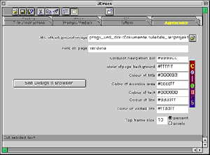
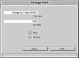

Arbeitsblätter fürs Papier |
webaktive Übungen |
visuelle Kommunikation |
Links |
wir |
Home |
|
| Technik |
Gestaltung |
|||||
|

|
Farbe,
Schrift und Aufschrift der Buttons kann man in allen Hot Potatoes über
Dialogfenster einstellen. So kann man die Übung optisch an die eigene
Website anpassen. Als Farben stehen die Webfarben zur Verfügung. Schriften müssen wie üblich auf dem Rechner vorliegen, damit man sie auswählen kann. Wenn Sie die Übungen einbetten in z.B. eine Website, sollten Sie hier die Schrift auswählen, die Sie auch auf der Website verwendet haben. Bedenken Sie, daß die Schrift webtauglich sein sollte. Es ist bei der Farbwahl zu bedenken, daß man Schrift auf Hintergrund lesen können sollte. |
 | ||||